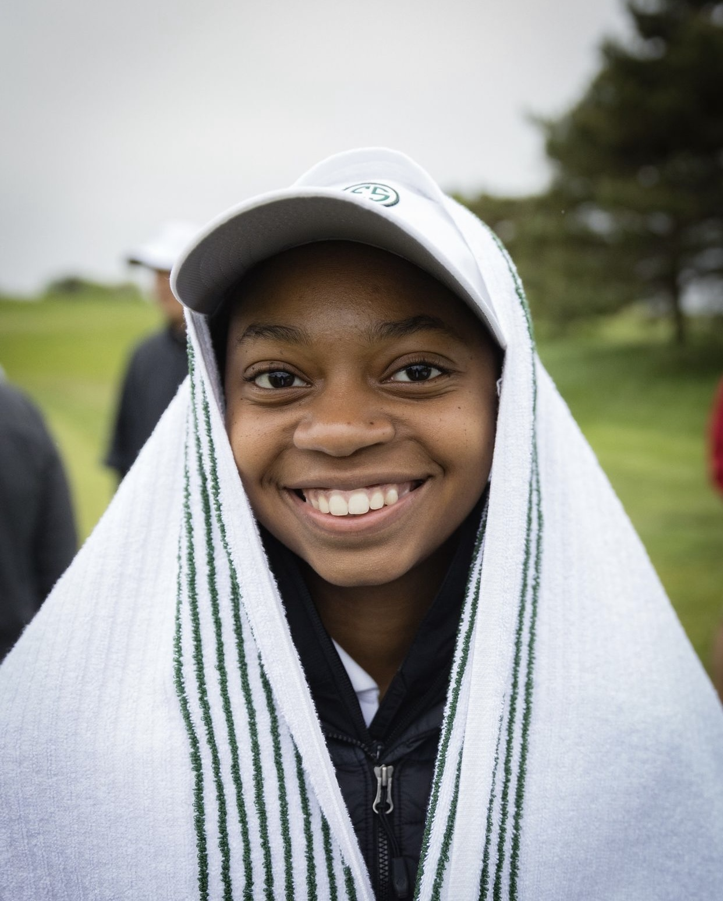
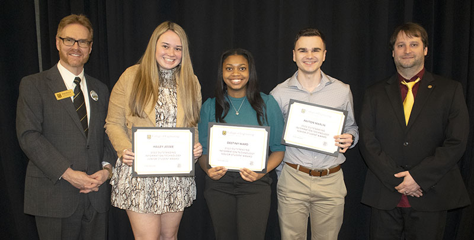
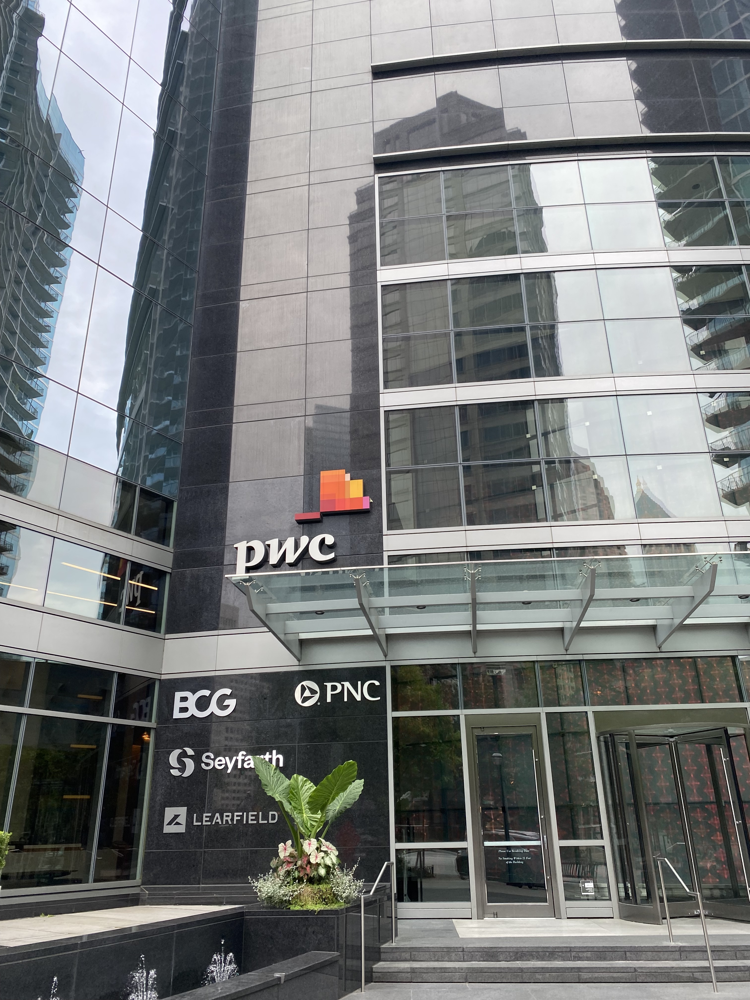

Flossmoor Country Club, Honor Caddie – March 2015 – August 2022
Destiny has been caddying for seven years at Flossmoor Country Club in Flossmoor, IL.
Since 2015, Destiny has completed over 400+ rounds of golf.
Caddying offers an excellent opportunity to earn money while working flexible hours, especially for young adults.
A round of golf usually takes four hours to complete. There are many duties of a caddie. A few responsibilities include:
- Keeping the golf clubs and equipment clean
- Reading green
- Raking bunkers
- Finding the golf ball after it has been struck
Skills such as customer service, effective communication, and course knowledge are also needed to complete an adequate job as a caddie.
Reflection:
Becoming a caddie was one of the first experiences I utilized the skills of communication, leadership, and work ethic in a professional work setting.
I offered shadow and mentee opportunities to beginner caddies during her seven years as a caddy.
This is where my skills were put to the test. Being a caddie taught me many soft skills and has helped me grow professionally.
Peer Learning Assistant (PLA) – January 2021 – Present
A Peer Learning Assistant (PLA) assists a professor in a classroom setting.
PLAs facilitate projects, small group discussions, and aid during laboratory activities.
In addition to these tasks, PLAs grade online homework assignments and hold three weekly office hours that lead discussions over class material.
The total committed hours per week are ten, which includes class time.
Destiny is a PLA for the Department of Information Technology courses Intro to Digital Media Design and Motion Graphic and Visual Effects.
First- and second-year students usually take these courses within the College of Engineering or digital storytelling majors. PLAs can be compensated by salary or federal work-study.
Reflection:
Being a PLA as a second job was a step forward in the right direction for my career.
I could apply the soft skills I gained while caddying in this setting. Peer learning assistant duties have taught me how to solve real-world problems and find the best solutions while maintaining academic integrity.
PwC Advance Intern – June 2022 – August 2022
PwC advance internship is an extended client-oriented internship catered to juniors and seniors. During the internship experience, students will develop digital skills and business acumen via leadership, client, and training opportunities.
The duration of the internship experience is 8-weeks. Shadow and community service opportunities are also offered to allow interns to build relationships with their coaches and managers to become successful leaders.
Destiny Ward worked as an Application Evolution Services intern in the Managed Services sector of Consulting Solutions.
Destiny's job was to assist new joiners with onboarding tasks and technology software provided by PwC and make enhancements to existing productions.
Reflection:
PwC has given me a new way to think about agile planning and managerial skills.
I picked up a new skill of quickly adapting to project changes oriented toward client work.
The culture of PwC has allowed me to strengthen my values as a student and employee, but also expand my perspective of my role in the company.